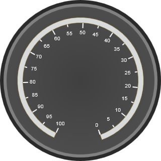

This section comprises of numerous options to customize label display.
Circular labels can be added to the scale using its different parameters.
You can set the location of the labels based on the scale
position using the DistanceFromScale property and the TickPlacement
property.
Both properties are used to control the location of
labels, but the difference between them is that when you use the
DistanceFromScale property, you can set the distance that needs to be maintained
to present the labels from the scale.
The TickPlacement property can be used
to specify where exactly in scale the distance will be calculated from (i.e.
outside the scale or inside the scale or on the center of the scale).
Labels can be shown for Major or Minor ticks, using the TickStyle property.
If you don’t want to specify the first value, you can set the IncludeFirstValue property to False.
Colors for the labels can be set using its TextColor property.
These properties, along with the others required to modify the label features, are given below:
|
Property |
Description |
Type |
Data Type |
Reference links |
|
LabelStyle |
Sets the label style for the circular gauge label. |
Server-Side /Client-Side |
Enum The values are: · Major Tick · Minor Tick The default value is Major Tick. |
NA |
|
IncludeFirstValue |
Include the first value for the labels in the gauge if set to true |
Server-Side/Client-Side |
Boolean |
NA |
|
Font |
Sets the font for th e labels in the circular gauge |
Server-Side/Client-Side |
Font |
NA |
|
Angle |
Sets the angle for the labels |
Server-Side/Client-Side |
Double |
NA |
|
LabelPlacement |
Sets the placement for the labels. |
Server-Side/Client-Side |
Enum The values are: · Far · Near · Center The default value is Far. |
NA |
|
DistanceFromScale |
Sets the distance of the ticks from the scale |
Server-Side/Client-Side |
Double |
NA |
|
TextColor |
Sets the color for the labels |
Server-Side |
Color |
NA |
Methods for Labels
|
Method |
Description |
Parameters |
Type |
Return Type |
Reference links |
|
SetLabelAngle
|
Sets the angel for the label |
ScaleIndex, LabelIndex,Value |
Client -Side |
- |
NA |
|
SetLabelDistanceFromScale
|
Sets the label distance from the scale |
ScaleIndex, LabelIndex,Value |
Client-Side |
- |
NA |
|
SetLabelStyle
|
Sets the style for the label |
ScaleIndex, LabelIndex,Value |
Client-Side |
- |
NA |
|
SetLabelPlacement
|
Sets the label placement from the scale |
ScaleIndex, LabelIndex,Value |
Client-Side |
- |
NA |
|
IncludeFirstValue
|
Sets the value for first value index |
ScaleIndex,Value |
Client-Side |
- |
NA |
Note: The properties for labels in the circular and linear gauges are all the same.
The code snippets for adding scale to the circular gauge are given below:
|
[ASPX]
< syncfusion : CircularGauge AutoFormat ="Blend" FrameOuterWidth ="12" FrameInnerWidth ="6" ID ="CircularGauge1" runat ="server"> <Scales> <syncfusion:CircularScaleScaleBarSize="10"SweepAngle="315"StartAngle="115" LabelAutoAngle="true"> <Labels> <syncfusion:CircularGaugeLabelLabelPlacement="Near"IncludeFirstValue="true"LabelStyle="MajorInterval" /> <syncfusion:CircularGaugeLabelLabelPlacement="Near"IncludeFirstValue="true"LabelStyle="MinorInterval" /> </Labels> <Ticks> <syncfusion:CircularGaugeTickTickPlacement="Near"TickHeight="10"TickStyle="MajorInterval"/> <syncfusion:CircularGaugeTickTickPlacement="Near"TickHeight="5"TickStyle="MinorInterval"/> </Ticks> </syncfusion:CircularScale> </Scales> </ syncfusion : CircularGauge > |
|
[C#]
protected void Page_Load(object sender, EventArgs e) { BuildCircularGauge(); } privatevoid BuildCircularGauge() { CircularGauge gauge1 = newCircularGauge(); gauge1.ID = "CircularGauge1"; gauge1.AutoFormat = GaugeSkins.Blend;
CircularScale scale1 = newCircularScale(); scale1.Minimum = 0; scale1.StartAngle = 115; scale1.SweepAngle = 315; scale1.ScaleBarSize = 10; scale1.MinorIntervalValue = 5; scale1.Maximum = 100;
CircularGaugeTick tick1 = newCircularGaugeTick(); tick1.TickStyle = TickStyle.MajorInterval; tick1.TickHeight = 10; scale1.Ticks.Add(tick1);
CircularGaugeTick tick2 = newCircularGaugeTick(); tick2.TickStyle = TickStyle.MinorInterval; tick2.TickHeight = 5; scale1.Ticks.Add(tick2);
CircularGaugeLabel label1 = newCircularGaugeLabel(); label1.LabelStyle = TickStyle.MajorInterval; label1.LabelPlacement = ScalePlacement.Near; label1.Font = new Syncfusion.Web.UI.WebControls.Gauge.Font("Arial", "12", FontStyle.Bold);
scale1.Labels.Add(label1);
CircularGaugeLabel label2 = newCircularGaugeLabel(); label2.LabelStyle = TickStyle.MinorInterval; label2.LabelPlacement = ScalePlacement.Near; label2.Font = new Syncfusion.Web.UI.WebControls.Gauge.Font("Arial", "12", FontStyle.Bold); scale1.Labels.Add(label2);
gauge1.Scales.Add(scale1);
this.Form.Controls.Add(gauge1); } |
|
[VB]
Private Sub Page_Load(ByVal sender AsObject, ByVal e As System.EventArgs) HandlesMyBase.Load BuildCircularGauge() End Sub
Public Sub BuildCircularGauge () Dim gauge1 AsNewCircularGauge() gauge1.ID = "CircularGauge1" gauge1.AutoFormat = GaugeSkins.Blend
Dim scale1 AsNewCircularScale() scale1.Minimum = 0
scale1.Maximum = 100 scale1.SweepAngle = 315 scale1.MinorIntervalValue = 5 scale1.ScaleBarSize = 10
Dim tick1 AsNewCircularGaugeTick() tick1.TickStyle = TickStyle.MajorInterval tick1.TickHeight = 10 scale1.Ticks.Add(tick1)
Dim tick2 AsNewCircularGaugeTick() tick2.TickStyle = TickStyle.MinorInterval tick2.TickHeight = 5 scale1.Ticks.Add(tick1)
Dim label1 AsNewCircularGaugeLabel() label1.LabelStyle = TickStyle.MajorInterval label1.LabelPlacement = ScalePlacement.Near label1.Font = new Syncfusion.Web.UI.WebControls.Gauge.Font("Arial", "12", FontStyle.Bold); scale1.Labels.Add(label1)
Dim label2 AsNewCircularGaugeLabel() label2.LabelStyle = TickStyle.MinorInterval label2.LabelPlacement = ScalePlacement.Near label2.Font = new Syncfusion.Web.UI.WebControls.Gauge.Font("Arial", "12", FontStyle.Bold);
scale1.Labels.Add(label2)
gauge1.Scales.Add(scale1)
Me.Form.Controls.Add(gauge1) End Sub |
You should get an output as follows:

Figure 39: Circular gauge with label placement set to “near”
 Custom Label
Custom Label